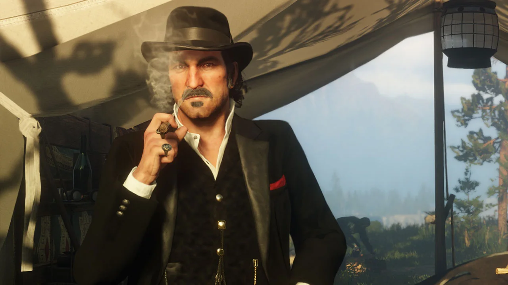
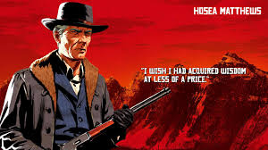
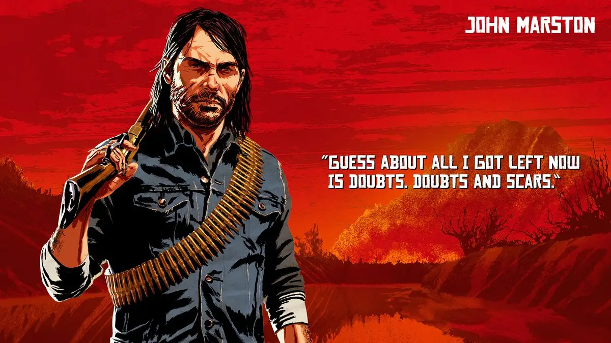
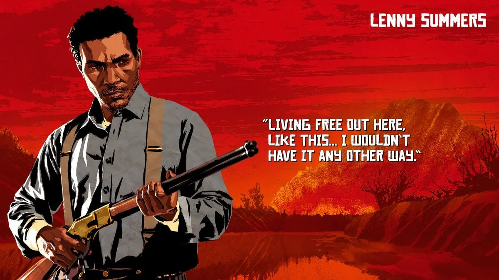
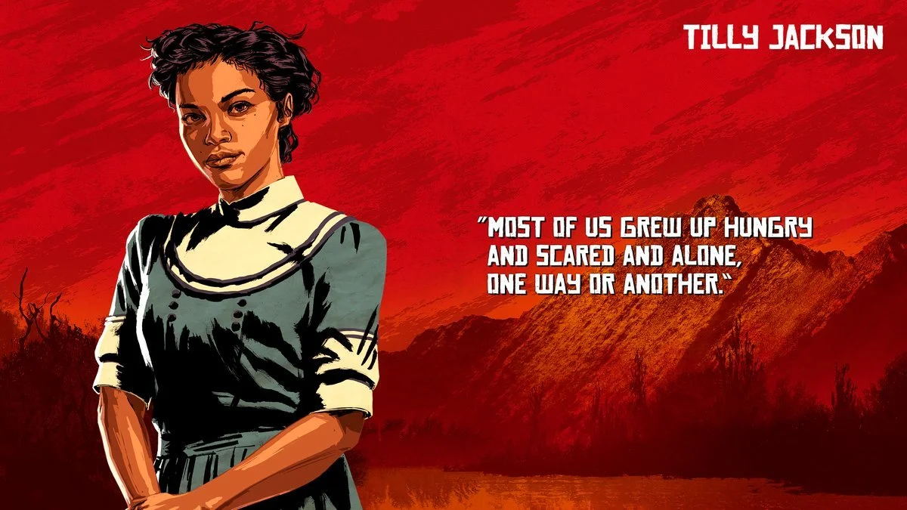

Personagens de Red Dead Redemption 2






Red Dead Redemption 2 apresenta uma série de personagens profundos e complexos, cada um com sua história e papel crucial na narrativa. Entre os mais destacados está Arthur Morgan, o protagonista, que é leal à gangue Van der Linde e se vê envolvido em questões morais enquanto lida com sua própria saúde e sua visão do mundo. Arthur se destaca por sua habilidade com armas e seu caráter, que evolui conforme as escolhas do jogador, oferecendo uma jornada de redenção e autodescoberta.
Dutch Van Der Linde, o líder da gangue, é um personagem carismático, mas cada vez mais instável ao longo do jogo. Inicialmente visto como uma figura de liderança forte, suas falhas e obsessões começam a afetar a gangue. Suas promessas de liberdade e prosperidade para todos começam a se revelar ilusórias, e sua frase “I HAVE A PLAN” simboliza o idealismo que, no final, se transforma em caos e tragédia.
Hosea Matthews, o veterano da gangue, é um mentor de Arthur e um conselheiro sábio. Seu caráter é mais moderado em comparação com Dutch, sempre tentando encontrar soluções pacíficas para os problemas da gangue. Hosea representa a moralidade mais equilibrada dentro do grupo, e sua morte marca um ponto de virada importante na história, mostrando o quanto a gangue estava se afastando de seus princípios.
John Marston, o protagonista do primeiro jogo da série, tem um papel crucial em Red Dead Redemption 2. Inicialmente um membro da gangue, ele começa a questionar sua lealdade e busca uma vida mais tranquila para sua família. Sua história está intimamente ligada à de Arthur, e sua jornada de redenção prepara o terreno para os eventos de Red Dead Redemption, onde John busca vingança e justiça por conta dos erros do passado.
Sadie Adler, uma viúva que se junta à gangue após a morte de seu marido, torna-se uma das personagens mais duronas e corajosas do jogo. Inicialmente traumatizada, ela evolui para uma combatente implacável, ganhando respeito dentro da gangue e, especialmente, ao lado de Arthur. A trajetória de Sadie é uma das mais impactantes, pois ela busca justiça e vingança, mostrando uma força impressionante para uma mulher em um mundo dominado por homens.
Lenny Summers e Tilly Jackson também se destacam como membros importantes da gangue. Lenny é jovem, inteligente e um dos mais próximos de Arthur. Sua personalidade simpática e seu papel nas missões de ação fazem dele um personagem querido pelos fãs. Tilly, por sua vez, é uma mulher independente e uma das poucas figuras femininas dentro da gangue, com um espírito forte e uma habilidade impressionante de lidar com as adversidades. Juntos, esses personagens representam diferentes facetas da gangue, com suas próprias lutas e desafios.